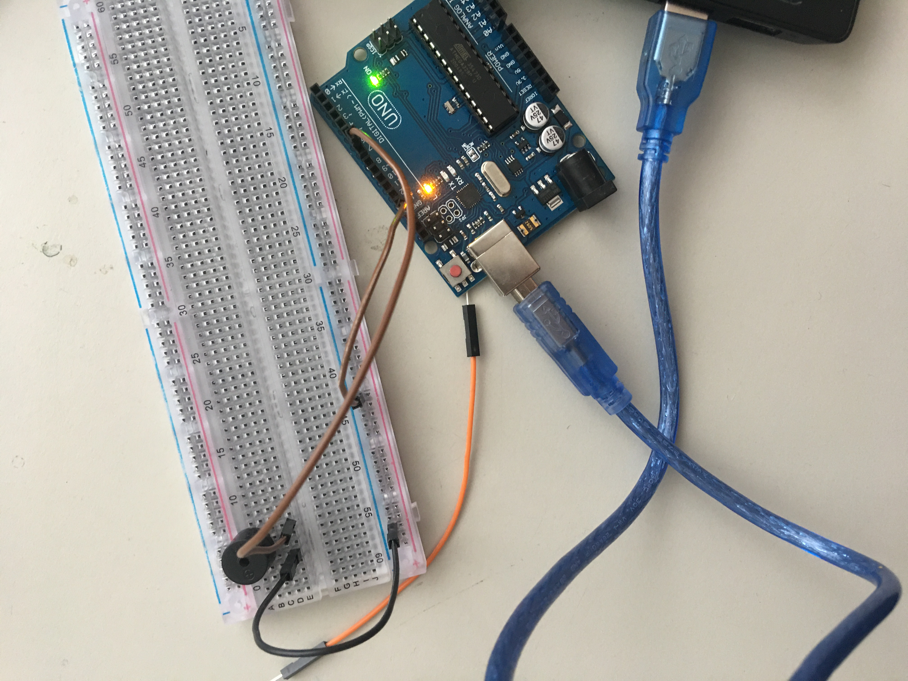
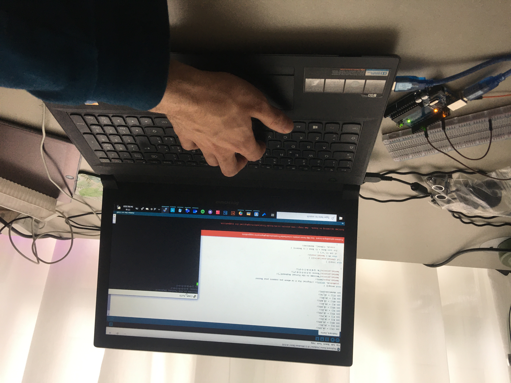
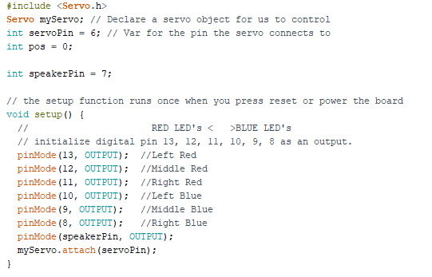
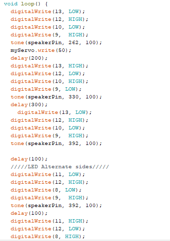

RESEARCH
I started my research by looking for general inspiring projects about Arduino. I mostly looked into artsy projects and was able to find a great amount of interesting material.
Putting The Pieces Back Together Again - ralf baecker
Artist’s website: https://rlfbckr.io/work/ptpbta/ Project video: https://www.youtube.com/watch?v=8GtFttw8z9U I always had strong interest for kinetic art installations, but it grew bigger only a few months ago, around September/October 2019, when I attended one of Today’s Art exhibitions in Den Haag called Putting the pieces back together by Ralf Baecker. Although it’s made with Raspberry Pi due to the huge number of inputs needed (over 1000), I think something similar could be made also with Arduino. What I love about this installation is that it drags its viewers into a dynamic world of constant movement and rearrangement. I love that all single tiny piece’s movement affects the rest of the installation, creating a sort of domino effect that never stops, and contrarily, evolves.
Khalil Klouche
https://www.klouche.com/- Laser Cabinet
– Monolith
Monolith Project video: https://vimeo.com/37853541
Laser Cabinet page: https://www.klouche.com/lasercabinet/
Khalil Klouche has a great portfolio containing projects all made with Arduino. Although his creations aren’t wearables, they’re a great source of inspiration and allow me to know how Arduino can be used and maybe applied to wearables later on.
The laser Cabinet is a playful invention where users can play with a piece of furniture. It’s good looking and innovative, and I’d love to build and possess something so cool in my own apartment. Other than the Arduino itself, also lasers, mirrors and stepper motors were included in the process.
Monolith is a very elegant art installation that activates only when gets touched on its surface. Once touched, it shows enchanting space visuals. In order to create this experience, the artist used both Arduino and Processing. I really love that Arduino can create an experience that makes its viewers feel completely immersed with just one touch.
Ikhsan Ismail - Eye Blink Controlled Light Switch
https://create.arduino.cc/projecthub/San_Ismail/eye-blink-controlled-light-switch-1febe6?ref=tag&ref_id=wearables&offset=6
After checking out some general creation made with Arduino, I started looking into wearables. https://create.arduino.cc/projecthub offers a huge updated list of projects (some professionals, some others less), made by passionate people who want to share their creations. One of them, who grasped my attention, was Ikhsan Ismail, who made glasses based on Shota Aizawa’s yellow goggles.
The glasses work this way: The light turns off when the person who’s wearing them blinks her/his eyes.
What I like about this project is the fact that it’s very amateur yet creative and fun. I’d like to create something similar and be able to deliver a playful experience to my users.
video: https://www.youtube.com/watch?v=3w_EYLou0uQ
TINKERING
DEMO 1: DICE
For the first demo I made an Arduino Dice. I firstly associated the LEDs with the numbers and the button value. I subsequently defined what number (LED) to switch on according to its sequence. I also set return random data, that is contained between 0, 7. To be able to activate the dice, a button was placed and an if statement is used linked with the button pressing.
DEMO 2: KEYBOARD
 For the second demo, I found in the internet an option to make an Arduino keyboard. This keyboard functions with the following notes: A-S-D-F-G-H-J by pressing: Q-W-E-R-T-Y-U. The code is pretty straightforward, for every letter is assigned a note and it’s played through the speaker. It’s a fun experiment and it inspired me to continue tinkering with musical features.
Screenshots of codes:


DEMO 3: GRETA's ORCHESTRA
This was a fun demo to make. I created an orchestra by using three different parts: LEDs which would turn on rhythmically, piezo speaker which would play the sound I created in the code, and lastly, I placed a servo motor which would rotate and make sounds on time too. Overall, it was an amazing outcome and super fun to make.
Screenshots of codes:
 
DESIGN BUILD
THE MAGIC HAT
For this challenge I created a magic hat, which magically opens when its approached by needing hands. It’s made of cardboard and it’s composed of three main parts: the based made of an already existing fisherman hat, the main vertical structure made of thick cardboard and lastly the lid, which is made of a lighter cardboard.
Arduino allows this hat to properly function by activating the servo motor only when a movement is detected by the proximity sensor. The lid stays open for around 8 seconds, enough time for the owner to be able to insert something and take her/his hands away from it before its closure.
What motivated me to create this device was my late-stage research on wearables, which was focused on gadgets and innovative tech clothing. My final product can be seen as both functional and artsy object.